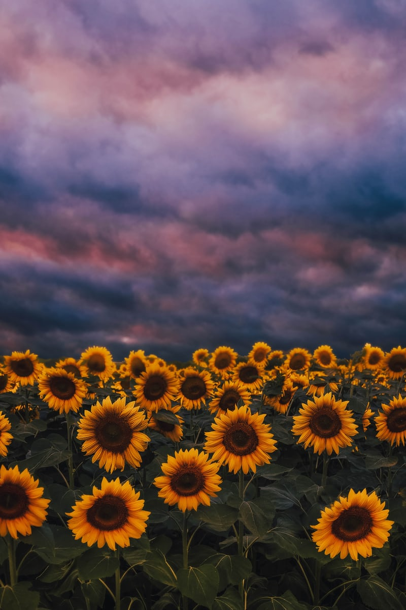
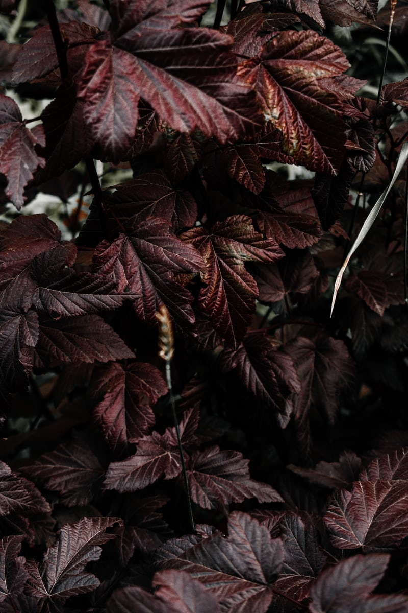
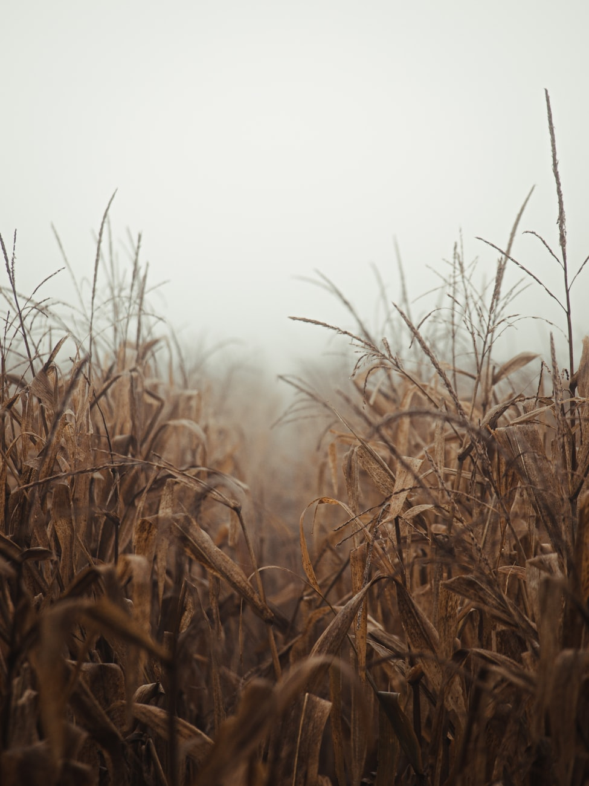

Originally, all photography was monochrome, or black-and-white. Even after color film was readily available, black-and-white photography continued to dominate for decades, due to its lower cost, chemical stability, and its "classic" photographic look. The tones and contrast between light and dark areas define black-and-white photography. It is important to note that monochromatic pictures are not necessarily composed of pure blacks, whites, and intermediate shades of gray but can involve shades of one particular hue depending on the process. The cyanotype process, for example, produces an image composed of blue tones. The albumen print process first used more than 170 years ago, produces brownish tones.
